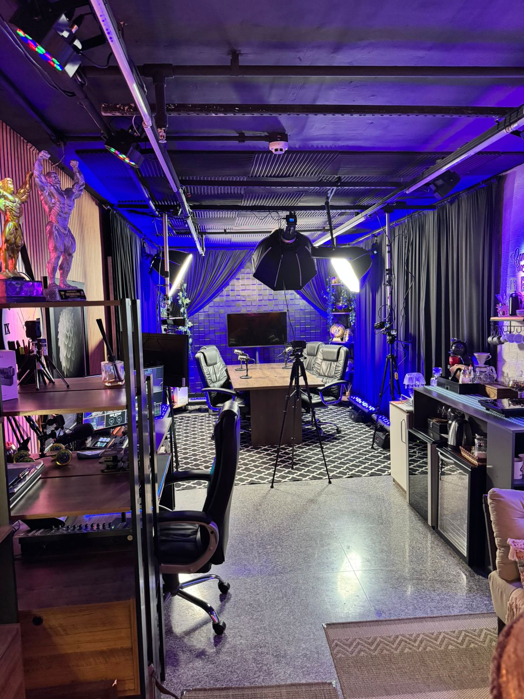

Seu podcast,
sem montar tudo do zero.
Você entra com a ideia, sua história e seus convidados. Nós oferecemos estrutura, equipe e direção para tirar o projeto do papel.
Montar um estúdio exige muito mais do que uma câmera.
Para ter uma estrutura própria, é preciso investir em equipamentos, espaço, equipe e operação — além de assumir a responsabilidade por tudo isso.
Câmeras, microfones, computadores, móveis, iluminação, estrutura técnica e os custos para manter tudo funcionando.
E se você decidir parar?
Além de todo o trabalho de montar a operação, ainda será preciso vender os equipamentos e tentar recuperar parte do investimento.
Você não precisa comprar tudo para começar.
Em vez de investir alto em uma estrutura própria e contratar profissionais separadamente, você pode começar utilizando uma estrutura que já está pronta.
MONTAR DO ZERO
- Comprar câmeras, microfones e computadores.
- Montar e equipar o espaço.
- Contratar direção, gravação e edição.
- Cuidar de publicação e organização do canal.
- Assumir custos fixos e manutenção.
COM A NOSSA ASSESSORIA
- Estúdio e estrutura disponíveis para gravar.
- Equipe acompanhando todo o processo.
- Episódios editados e cortes prontos.
- Canal do YouTube preparado e publicação inicial.
- Você foca no conteúdo e no seu negócio.
Sua empresa não precisa esperar o cliente passar na porta.
Com um podcast, você cria novas oportunidades para apresentar sua empresa, compartilhar conhecimento e ser lembrado por pessoas que ainda não conhecem o seu trabalho.
VISIBILIDADE
Levar sua marca e sua mensagem a novos públicos.
CREDIBILIDADE
Mostrar conhecimento, experiência e a qualidade do seu trabalho.
CONEXÃO
Criar conversas que aproximam potenciais clientes da sua marca.
PRESENÇA DIGITAL
Gerar episódios e cortes para alimentar seus canais de comunicação.
Nós cuidamos da produção com você.

-
Estúdio equipado e estrutura para gravação Ambiente acolhedor, profissional e com equipamentos de alta fidelidade.
-
Acompanhamento presencial de uma integrante da equipe Presença ao seu lado em cada gravação para orientar e garantir tranquilidade.
-
Orientação para você conduzir os episódios como host Técnicas práticas para perguntar com naturalidade e postura firme.
-
Reunião de alinhamento e organização dos episódios Definição de pautas estratégicas que valorizam seu nicho e objetivos.
-
Edição do episódio completo e criação dos cortes Vídeos finalizados com áudio equalizado, corte de câmeras e legendas nos cortes.
-
Preparação do canal no YouTube e publicação inicial Canal configurado com identidade visual, capas e primeiros uploads.
Um episódio rende muito mais do que uma gravação.
A cada episódio, você recebe o vídeo completo e 8 cortes editados para divulgação. São 48 conteúdos curtos, além dos 6 episódios completos, para ampliar a presença da sua marca nas redes.
Você não precisa organizar tudo sozinho.
Direção Estratégica
Reunião de alinhamento e organização da proposta do podcast.
Gestão de Pauta
Formulário de pré-cadastro, contato, disponibilidade e confirmação.
Acompanhamento
Recepção, alinhamento e suporte presencial da nossa equipe durante todo o processo.
Apoio Visual
Manual em PDF para convidados, fotos e vídeo de depoimento quando viável.
Publicação & Autonomia
Preparamos o canal, publicamos os primeiros episódios e ensinamos você a seguir sozinho.
Seu podcast com estrutura e equipe.
Investimento inteligente sem custo fixo de estúdio nem compra de maquinário caro.
CONTRATAR ASSESSORIATudo o que está incluído no pacote:
- 6 gravações / episódios em estúdio profissional
- 48 cortes (8 cortes estratégicos por episódio)
- 6 vídeos completos editados e finalizados
- Artes de divulgação e materiais em PDF
- Formulários e organização dos convidados
- Preparação e publicação inicial do canal no YouTube
O pacote contempla 6 gravações no período de 2 meses. Gravações extras e renovação poderão ser negociadas entre as partes.
Cinthia Villar e Tatiane Gomes
Duas profissionais que trabalham juntas para transformar sua ideia em um podcast organizado, bem produzido e alinhado à imagem que você deseja construir.
Pronta para dar voz ao seu projeto?
Agende uma conversa inicial e tire todas as suas dúvidas conosco.
FALAR COM CINTHIA E TATIANE